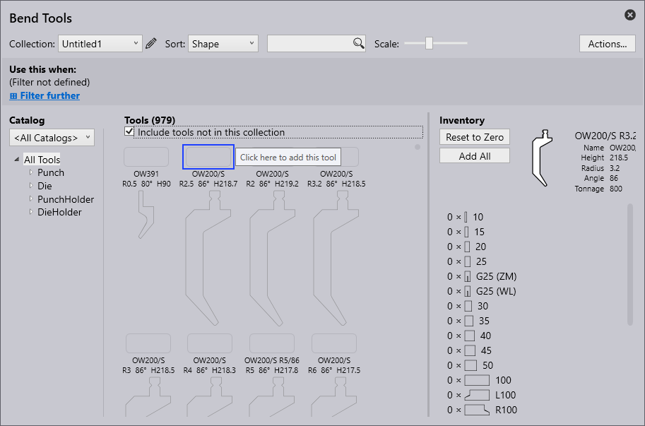

Ohraňovacie nástroje
Pojmy používané pri vytváraní ohraňovacích nástrojov sú popísané nižšie:
| Sériové číslo | Názov | Popis |
|---|---|---|
1 |
Zoznamy nástrojov |
Tu je možné zvoliť zoznamy nástrojov, s ktorými sa má pracovať. Pomocou možnosti New (Nový) je možné vytvoriť nový zoznam. |
2 |
Triediť |
Nástroje je tu možné zoradiť podľa špecifických kritérií (výška, názov, tvar, rádius, uhol, šírka zápustky, priorita, správa nástrojov). |
3 |
Hľadať |
Nástroje je možné vyhľadávať pomocou vyhľadávacieho okna. Tu je možné napríklad vyhľadávať názvy nástrojov podľa abecedy. Okrem toho je možné zadať aj zložitejšie požiadavky vyhľadávania. Táto požiadavka vyhľadávania nájde všetky nástroje s "UT" (OW, horný nástroj) alebo "EV" (spodný nástroj) v názve, ktoré spĺňajú aj nasledujúce podmienky: uhol ≤ 30, výška ≥ 140, výška ≤ 220, rádius = 1. |
4 |
Mierka |
Posuvným ovládačom je možné zmeniť veľkosť náhľadu nástrojov. |
5 |
Činnosti |
Nasledujúce činnosti je možné vykonávať: - A Pridať katalóg: Pridanie rôznych typov strojov. - B Nový zoznam nástrojov: Vytvorenie novej sady nástrojov. - C Kopírovať zoznam nástrojov: Vytvorenie kópie sady nástrojov - D Exportovať zoznam nástrojov: Aktuálny zoznam nástrojov je možné exportovať ako súbor „.btools“. - E Importovať zoznam nástrojov: Zoznam nástrojov je možné importovať ako súbor „.btools“. - F Importovať z ARV: Nástroj je možné importovať zo súboru ARV, tieto nástroje sa potom uložia do katalógu nástrojov (tento sa vytvorí, ak predtým nebol k dispozícii). - G Importovať z DXF: Nástroj je možné importovať zo súboru DXF. Tieto nástroje sa potom uložia do katalógu nástrojov (tento sa vytvorí, ak predtým nebol k dispozícii). - H Reset zoznamu nástrojov: Obnoví zoznam nástrojov do predvoleného stavu. - I Zrušiť: Zatvorí okno „Akcie…“. |
6 |
Evidencia nástrojov |
Zobrazí prehľad zvoleného nástroja. Nasledujúce činnosti je možné vykonávať: - Vynulovať: Celý stav zásob zvoleného nástroja sa odstráni z aktuálneho zoznamu nástrojov. -Pridať jednu sadu: Do aktuálneho zoznamu sa pridá iba jedna sada zvoleného nástroja. -Pridať dĺžku: Pridať dĺžku nástroja. - Pridať všetko: Celý stav zásob zvoleného nástroja sa načíta do aktuálneho zoznamu nástrojov. Stav zásob je definovaný v zozname nástrojov <Všetky nástroje>. - Uložiť: Uložiť použité zmeny. |
7 |
Stav zásob nástrojov |
Zobrazí stav zásob zvoleného nástroja. Kliknutím ľavým tlačidlom myši sa pridá segment. |
8 |
Nástroj bez stavu zásob |
Nástroj bez stavu zásob nie je zahrnutý v aktuálnom zozname nástrojov. Kliknutím na prázdne pole sa pridá štandardná zásoba nástroja a nástroj sa začlení do aktuálneho zoznamu nástrojov. |
9 |
Priorita |
Nástroj sa vyberie na základe priority zadanej užívateľom. 1 = vysoká priorita nástroja 5 = nízka priorita nástroja |
10 |
Oblasť zobrazenia nástrojov |
V oblasti zobrazenia nástrojov sa zobrazia všetky nástroje zo zvoleného zoznamu nástrojov. Nástroje bez inventára je možné zobraziť aj pomocou zaškrtávacieho políčka „Zahrnúť nástroje bez stav zásob“. |
11 |
Filter nástrojov |
Tu sú nástroje z aktuálneho zoznamu nástrojov zoradené podľa ich typu a tvaru. Výberom elementu v tomto zozname je možné filtrovanie. |
12 |
Katalóg |
Pomocou tejto funkcie je možné vybrať jeden z mnohých nainštalovaných katalógov nástrojov (vrátane TRUMPF, vlastných atď.). |
13 |
Podmienka filtra |
Podmienka filtrovania pre aktuálny zoznam nástrojov, ktorú automaticky používa automatický nástrojár. Toto je možné použiť pre pomenovaný zoznam nástrojov, ale nie pre špeciálny zoznam <All tools> (Všetky nástroje). Filtrovať je možné podľa rôznych aspektov vrátane stroja, materiálu, hrúbky plechu atď. |
Vytvorenie zoznamu nástrojov
-
Ak chcete vytvoriť nový zoznam nástrojov, kliknite na tlačidlo Actions (Akcie) a zvoľte New Tool-List (Nový zoznam nástrojov).

-
Premenujte zoznam nástrojov kliknutím na ikonu úprav .

-
V novom zozname nástrojov sa štandardne zobrazujú všetky nástroje vrátane horného, spodného nástroja, držiaka horného a spodného nástroja, ktoré neboli pridané do inventára. Presvedčte sa, že je zaškrtnuté políčko Include tools not in this collection (Zahrnúť nástroje, ktoré nie sú v tejto sade).

-
Ak chcete pridať nástroj, kliknite na rámček nad názvom nástroja a stlačte ctrl+enter, čím sa nástroj odstráni.


-
Možnosť Use this when (Použiť toto, ak) umožňuje užívateľovi filtrovať a nastaviť pravidlá pre nový zoznam v závislosti od rôznych kritérií.
-
Kliknutím na save (uložiť) sa pridá tento nástroj do sady.
Pridanie pravidla pre zoznam nástrojov
Kliknite na možnosť Filter further (Filtrovať ďalej) a použite pravidlo z rôznych dostupných kritérií filtrovania.
-
Machine (Stroj) - Označuje stroj používaný na proces ohýbania.
-
Material (Materiál) - Označuje typ ohýbaného polotovaru.
-
Thickness (Hrúbka) - Označuje hrúbku ohýbaného materiálu.
-
Radius (Rádius) - Označuje rádius ohybu.
-
Surface (Povrch) - Popisuje textúru alebo povrchovú úpravu materiálu.
-
Treatment (Úprava) - Popisuje akékoľvek procesy pred ohýbaním alebo po ohýbaní použité na materiáli, ako je tepelné spracovanie, povlakovanie alebo galvanizácia.
-
Film (Fólia) - Označuje ochrannú alebo funkčnú vrstvu aplikovanú na materiál.
-
Tag (Značka) - Vlastný štítok priradený na kategorizovanie, filtrovanie a organizovanie položiek pre jednoduchšiu identifikáciu.
| Zoznam nástrojov musí mať pred uložením aspoň jedno kritérium filtrovania (inak by sa tento zoznam nástrojov použil pre každý dielec). |

Na obrázku nižšie je zobrazený príklad kritéria použitého na vytvorenie pravidla:
| Keď konkrétnej požiadavke na nástroje zodpovedá viacero zoznamov nástrojov, použije sa zoznam nástrojov s najkonkrétnejšou zhodou. |